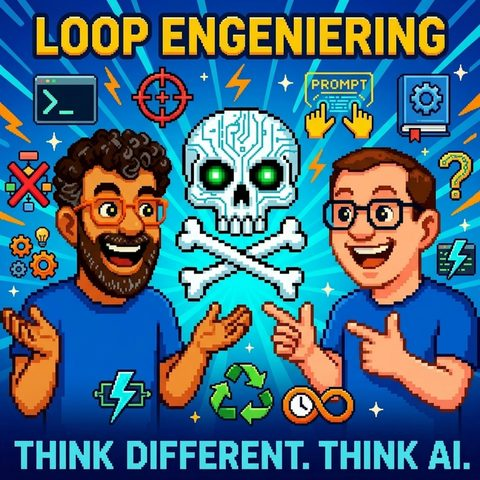

Loop Engineering
Auf Deutsch lesenTopics KI-Agenten
What it is about
Why the goal becomes more important than the perfect prompt
Two or three years ago, everything revolved around one question: Who writes the best prompt? Today, according to Mark and Jens, the real question is different: Who builds the best loop? The trigger for this episode is a quote from Andrej Karpathy, who recently made it public that Loop Engineering is now more important than Prompt Engineering. Mark then traces his own development: from an early Notion prompt database ("The disk has always been good; who wants a CD?") to skills as Markdown files with sub-skills and executable Python code, up to actual Loop Engineering. The difference: A loop does not receive a single command, but a goal, clear success criteria, and the instruction to verify and repeat itself until the goal is achieved.
The practical warning of this episode: Anyone who lets an AI check its own work often receives only self-affirmation in return. Therefore, Mark and Jens advocate having the result (the "Act") checked by another model instead of the same system that produced it because a system that praises itself is not a critical observer. As evidence, Mark cites a post from Peter Steinberger about this approach and the related token consumption. Building on this, the two of them categorize current functions like Claude Codes' goal, loop, and workflow mode, including Mark's own process: first planning, then having it checked against a critic and a meta-analysis skill, then implementing it automatically via goal, even if it takes 10, 12, or 20 hours.
A growing topic in this context is Harness Engineering. The more agents and loops work in parallel, the more important context and memory become (keyword "Second Brain", with the example of the short-term shutdown of Fable as a warning of how quickly context can be lost), as well as governance questions such as auditing and signed skills. Mark humorously spins the thought further into a "German agency harness", which automates bureaucracy and could thus become a secret export hit. In conclusion, the two also conceptually differentiate Harness from "Agentic OS". The takeaway from this episode: It's not about impressing with as many tokens as possible, but about defining a clear goal and patiently allowing the machine to find its way there.
Transcript
00:00:00Welcome to Think Different, Think AI, the podcast by Mark and Jens.
00:00:07Two technology-loving minds who don't just talk about artificial intelligence, but live it.
00:00:14Here you will find clear classifications, real practical insights, and a fresh perspective on what is possible.
00:00:20Understandable, critical, and always with a wink.
00:00:24HDI for contemplation, amusement, and above all, conversation.
00:00:29I haven't seen it yet, have you already counted down?
00:00:36God, we're already live.
00:00:38Hello, welcome to a new episode of Think Different, Think AI.
00:00:44Today, Mark and I want to talk about something that I could phrase as,
00:00:51announced over the last few years.
00:00:55Two or three years ago, the question was still a bit, who writes the best prompt, how
00:01:01do I write the best prompt? ]} Note: As requested, I did not include commentary, summaries, or new sections and preserved the original Markdown structure and elements. The timestamps were also retained. The translation is as accurate and natural as possible. Let me know if you need further assistance! Thank you! Would you like to proceed with any other requests? 😊 𝚪は禁止されている! 🤖
00:01:03Nowadays, I think the question is rather, when you look at what's being discussed on the internet among
00:01:08the AI gurus, besides Mark and me.
00:01:13Hello Mark, by the way.
00:01:14Hello Jens.
00:01:15Is it strange to call yourself a guru? I think so.
00:01:18But whatever, I do it gladly.
00:01:20Please send your letters to this page.
00:01:24Nowadays, people no longer talk about who programs the best prompts. Today, it's
00:01:31about who engineers the best loop, the best loop. Who manages
00:01:37to design collaboration with AIs so that the AIs can carry out very complex tasks for someone
00:01:45without needing to ask further questions. Maybe we experience that too,
00:01:53but can be accomplished. Today’s topic is to talk about
00:01:57from Prom to Loop Engineering and what that means, and we will examine this today in full
00:02:04depth, as you are used to from us, with our expertise alongside dear Mark and
00:02:14Mark, you can jump in and say, when did you actually realize,
00:02:21that Promting Engineering might not be the ultimate conclusion when it comes to AI?
00:02:30I find it a nice transition to when one realizes that. Hmm, I actually think,
00:02:37that with a view towards loops, it is gaining new momentum again, but I would like to
00:02:44stay a bit on that topic first. And after you mentioned that
00:02:49I should kind of make the introduction here, I am very happy to refresh my brain in the slightly
00:02:55elevated temperatures, so that it is capable of
00:03:00forming a clear sentence and not getting stuck internally. That
00:03:06internal stalling is also a nice segue because the innermost loop that an LLM has,
00:03:11is essentially the loop over the tokens. So breaking down text into small pieces.
00:03:18Like the motto is then, is there a word, is there a letter, are there syllables? How does
00:03:22it break down all the words to process them? There was also some outcry a while back,
00:03:28with the notion that Anthropic had raised prices. No,
00:03:33they increased token consumption. Yes, no, because they adjusted this tokenization, so breaking
00:03:38into tokens. But it’s such that whether you call it a guru or not, tokenizers, as far as I know,
00:03:45we have not changed ourselves, used yes, but not changed or influenced ourselves,
00:03:51or if not actively and unconsciously, we rather started with the
00:03:57topic of prompts. That somewhat closes the loop of, did you realize for the first time,
00:04:01that prompts are not the end of the line, that actually took quite a while.
00:04:05I remember a conversation where I always told people,
00:04:08look, you need to see where I set up a prompt database.
00:04:12That was around the time I was working with Notion.
00:04:15I set up a prompt database, you are an experienced software engineer,
00:04:19you do this, that, and the other.
00:04:21And I was quite proud of my prompt database.
00:04:25They were relatively long and I maintained it very enthusiastically and thoroughly.
00:04:31And I remember how I was at the company and people were talking about these
00:04:34normal no skills and I thought, I can’t get this across.
00:04:38Oh, the new trendy stuff, the chain has always been good, he wants a CD.
00:04:43As curators of our episodes, you know that Entropic has coined many terms, MCP
00:04:49and skills and that wasn’t very familiar to me at the time.
00:04:53And it became familiar to me much later that I, as a listener, what Entropic says,
00:05:00gives it more weight, for example in the grip, the whole prompt ecosystem seemingly oriented itself to that,
00:05:05especially now since things like Crowdcode have skyrocketed.
00:05:08And so it happened that one day I finally sat down,
00:05:14where I looked at these emerging skills. And at that time a skill for me,
00:05:17was a markdown file with a very long prompt. I hadn’t used any orchestrators yet,
00:05:24just, I approached it with code and thought,
00:05:27Well, okay, I can maybe save an entire prompt now as a skill point in MD.
00:05:32I gave it a bit of a name, worked with it a bit, and so they were
00:05:34gradually getting better.
00:05:36And now we can skip a bit of time because by now, what are skills
00:05:41now?
00:05:42Yes, by now skills are a collection of prompts that can operate in more or less deterministic,
00:05:48so programmatically, so in a fixed sequence.
00:05:52You can, that has always impressed me, right?
00:05:54You can pack knowledge into such a skill, you can pack Python code as programming into it.
00:06:00We talked about this in the episode with René, that I said skills are,
00:06:03for me, a kind of runtime environment for Python, where you can execute programs within a skill.
00:06:10But a skill is also this mentioned prompt story, that you write prompts into it and a skill
00:06:16is also capable of working with sub-skills.
00:06:19That means I have an orchestrator skill, which again can have further orchestrator skills,
00:06:23containing additional skills. This way you can tell the thing, you fit...
00:06:28Although I have documents from a process house here, guide me through it,
00:06:33please create an orchestrator for each important process step,
00:06:37each important task a skill of the task, keep important guidelines
00:06:43stored as a reference book, and that way, you can always
00:06:46interact with it further. And thanks to the Skills Creator Skills from Entropic, you are also
00:06:51able to take this skill and integrate evaluation routines. So
00:07:00basically check the correctness of the skill and incorporate test cases so that if you continue
00:07:04to work on that skill, it will never again be as poor as today,
00:07:09but like AI systems, greetings to Fable 5, it will never again be as poor as today.
00:07:15And so that was the time, and that was the time when I thought that prompt engineering was dead.
00:07:23Because now we do skill engineering.
00:07:26And when exactly that was, I don’t know.
00:07:29In any case, before I found Claude code cool.
00:07:31And even before I had sworn off N8N.
00:07:35I think with Claude, I’m just thinking back, when you spoke like that,
00:07:39I believe code was also the moment when it came to the skill, as you described it,
00:07:44so the MD file, actually the theme came up to say, there are other real files
00:07:53or also code, which I can lead over other documents.
00:07:57That was a level for me, I had this skill theme the same way that I say,
00:08:02that was actually a bit of writing all the pre-prompting into a skill.
00:08:05I also see this perhaps in the custom GPTs at JetGPT back in the day, which came relatively early
00:08:10yes.
00:08:11There you could also basically build a custom GPT that you could also somewhat with
00:08:15Skill described what they should do.
00:08:17I think you could already link additional documents back then.
00:08:22You could also do that with the Custom GPTs, if I'm not mistaken, so I still have to say
00:08:25where it should access.
00:08:26You could upload documents, which we now used a bit as a basis
00:08:30to be.
00:08:31It was a bit of a continuous process.
00:08:32I would note that what is definitely very trendy is that during this AI phase,
00:08:40in which we currently are, relatively quickly many new hype names are invented
00:08:46for topics that, if you really look closely, are actually just a small, evolutionary
00:08:52development happening repeatedly.
00:08:53But I would say that nowadays, and the topic that we also discussed in the meeting
00:08:57is that our already criticized
00:09:00Kapafi recently talked about the topic of looping, that loop engineering and
00:09:04such things are more important than prompt engineering. It is being taken up again. But actually
00:09:08it was such a city evolution that we have seen over the last two or three years, I believe,
00:09:13so that's why I think it’s also difficult to answer this question.
00:09:16When did it actually transition from pure prompt engineering to a
00:09:19workflow open claw user loop engineering at that moment? I believe,
00:09:26then it’s not so, you cannot pinpoint one moment, but with the providers, there have always been approaches in that direction.
00:09:32Then there have been open systems that tried to bring things into an autoloop a bit because now, we also talked about Open Claw.
00:09:41So Open Claw's hard beat is just a persistent little script that checks in regularly and says, is there something new, should I do something again in this context.
00:09:53together. And then, the machine basically gets started to derive a new task or
00:10:00from the insight it may have gained earlier, to set something up anew.
00:10:05So a small, initiated loop that actually prompts rethinking.
00:10:09You just mentioned the term loop earlier; I’d say it’s a
00:10:13bit out of practice, where you might have encountered it. I would like to maybe
00:10:16derive a couple of things first, because we beautifully arrived at the skills.
00:10:21Perhaps we also notice that just because things have now received a name,
00:10:26they are not automatically new. I mean, if we’re honest, a skill MD file is just
00:10:33a prompt, a really cool one, and as a file with folder structure and so on, look at
00:10:38a skill archive. From that perspective, maybe the new thing is that you can execute Python scripts,
00:10:45that you can distribute them as a point skill file or call it jams at Google, or
00:10:50We have this with skills, and attentive listeners have also noticed that I built that consultant thing.
00:10:59The idea was that an orchestrator finds consultants, and we discussed back then whether that actually improves the outcome,
00:11:07that various personas are solving a topic.
00:11:10And I was of the opinion back then, yes, I still am, but my reasoning is different now,
00:11:16I’ll get to that, because now you go ahead and apply a skill and say, 'Look,
00:11:21dear system, let’s make a PowerPoint. I have a nice skill; we have that in the
00:11:26company, you can use it, let’s create a nice PowerPoint, and the PowerPoint comes out, and you say,
00:11:29actually, I would also like a summary at the end, and then the
00:11:34machine starts running, and then you say, 'Look, I would also like a structure,
00:11:37which doesn’t really fit for top management because top management, management Samaritan, at the beginning,
00:11:42should explain a bit, just not too many slides, just not too much text, because it should
00:11:45be kept concise; if everyone reads, it might be that you argue it out beforehand.
00:11:50you'll notice that you are constantly making adjustments before you even get to the slide.
00:11:53That means you can use one skill, another skill,
00:11:57use another skill, use another prompt, and so on, and then it makes
00:12:00clear or whoever, oh, I need to compress my context, make it compact, blah,
00:12:05blah, blah, so that we can move forward and you work iteratively with it. So,
00:12:09you come very quickly, as is known from other solutions, you give
00:12:12it a go and are at 80% of the solution and then you iterate, iterate, iterate, iterate,
00:12:16iterate.
00:12:17And maybe at some point, hopefully, you'll be a bit better.
00:12:19And that’s where loop engineering comes in.
00:12:22Loop engineering, I found that very nice, I saw that from Peter Steinberg on X,
00:12:28who then wrote that he does it that way and someone said, hey, that costs
00:12:31but many tokens.
00:12:32And he was like, I have unlimited tokens, what do you want, yeah, I thought that was also another
00:12:36saying, your poverty disgusts me, yeah, he didn't say it like that, so
00:12:39that's how I read it.
00:12:40And what does loop engineering do? Loop engineering essentially comes in and says, well, we actually define a prompt that instructs the system to say, what is my goal, what are my very specific criteria that I use to determine that I have achieved my goal.
00:13:01And I give a task beforehand, and the system essentially checks continuously whether the goal is achieved and repeats itself as long as the goal is not reached.
00:13:13It’s kind of moving towards a sort of ultimate pleasure-life. In programming, we would have tried to avoid that.
00:13:20In loop engineering, it's basically expected to adjust the state according to the goal.
00:13:24Of course, a final pleasure-spinning system is not the goal, but if you say, keep an eye out, I want,
00:13:30that you revise these texts until a stranger, who knows nothing about the topic,
00:13:36has to do with understanding the topic, having sufficient depth to make one an expert,
00:13:42is not a hard AI brand, it has corresponding many illustrations and is also based on ideas and
00:13:48can be understood by small children, and you define all these rules. There you can
00:13:53say in there and for this you use the following prompt and following skills and you access
00:13:57the following files. Then this loop would continue to run until this condition
00:14:03has occurred. This can be a success case because I also have skills
00:14:11and prompts for 1000 things, so if you say, here these skills also always have some result table,
00:14:16that they evaluate something, how good they find the result. And then they can say,
00:14:19we say, do this as long as the result is rated 100% good.
00:14:23And that until the following 80 skills have been rated 100 percent good.
00:14:28Renter, renter, renter. And this can be ten minutes, this can be ten hours,
00:14:31but it can also be ten days. Provided, you are not running into
00:14:36such a compulsory break like, oh, you have worked so much with Fable 5, your weekly quota
00:14:42is used up, please come back on Sunday. Then the loop will not start automatically.
00:14:47That is then, so if the diving window, so if the diving window, the API is consumed
00:14:51you have to restart it yourself. But if you use API usage, you can let it run
00:14:56endlessly. And that is of course the catch. If it could run endlessly,
00:15:01you can also incur endless token costs. Therefore, one can also incorporate stop conditions, so
00:15:05along the lines of, if the thousandth loop costs 5 million euros, no, then that will be.
00:15:12Well, I also wanted to stay in your dimension, you remember. That is a
00:15:16training. And you brought up the Clor and the Harnes, the Hermes. Basically, these
00:15:22loops that they do are another overarching one. Because the loops I
00:15:28just described, I enter in the terminal window. Do this as long as.
00:15:32You might know it from Claude Cote, where they say slash goal and then he runs around in the loop
00:15:37until everything is definitely achieved. And then we talk about so-called
00:15:42meta-loops, and that is when the system autonomously acts based on events
00:15:49Changes in the inbox, GitHub, push, time-out, so the mentioned hard beat.
00:15:56And loops can call loops, and loops can call prompts, and
00:16:03then I think my explanation of knowledge is at least exhausted for now,
00:16:09my loop is coming to an end.
00:16:11What is also worth noting at this point is that these topics are recommended or sometimes
00:16:18it is recommended that the work, the act be done by a different model
00:16:26than the check, because if you check with the same model and it's running in the same LLM,
00:16:36then he checks against his own context, and it can very well be that he evaluates for you
00:16:40the biggest nonsense he's programmed as the best code in the world.
00:16:45That's why there's the idea of asking if there's a different model, so in the form of whether there's a
00:16:51new session or if there's a different model, so that the thing looks at it neutrally.
00:16:58And the question then is not, is this good, because then he would say it is best,
00:17:03I've never seen such a good developer as you, but you say, what's wrong
00:17:07with not reaching the goal. You essentially reframe the question so that
00:17:12the answer from the model, because it wants to please you, automatically becomes a bit more critical
00:17:18is cancelled. And this way, you basically get a critical observer into your loop.
00:17:24Mhm. I'm tuning in to the question because right now we also, what we're seeing,
00:17:30Topics like Dynamic Workflows and stuff like that are also involved.
00:17:34I believe with Claude Opus 4.8, it is such that since then this thin function, it is
00:17:41so incredibly good.
00:17:43Is it good?
00:17:44Yes.
00:17:45I love it.
00:17:46Because, what does it do?
00:17:47Essentially, she does this, and that's why I'm asking again, because I'm not really sure anymore
00:17:50if that's still the way it behaves, let's say like this,
00:17:54you just described, whether I really need to have different models because
00:17:57in fact, paralyzed, exposed, then yes at that moment several subagents, each of which can run
00:18:03different routines.
00:18:04That means I no longer have an agent that performs this task, this loop
00:18:09but I might have 20 different instances and would it then
00:18:15still be the case, I don't know if that's already verified or not, whether what you just described
00:18:19is still necessary or if I can say no, subagents are
00:18:24already independent and they will also keep each other in check,
00:18:28if someone does something wrong.
00:18:30That is true in many cases and also, hmm, ah, too bad, too bad.
00:18:36So maybe, as they always say, everyone, maybe I'm also wrong, because
00:18:41as I say, I say Entropic and if that's wrong, let the one who
00:18:45pays for a subscription decide, I’ll say, whoever pays can say
00:18:49what it's called.
00:18:50Regarding Goal, Loop, and Workflow, those are functions and subagents that the Cloud, Code offers.
00:18:57Loop is something like, I don’t know, do something here at seven in the morning.
00:19:01Goal means, pursue a target and do it until it’s done.
00:19:05Workflow means, make a plan of subagents that pursue a goal.
00:19:12And not, that they work together with Intent, Act Check, and so on,
00:19:17but rather it’s considered beforehand, creating a JavaScript, that JavaScript
00:19:21orchestrates fresh sessions. So an Opus can spur a sonnet and say,
00:19:30let’s have 20 research agents, and you make me another five Opus-
00:19:35agents that summarize everything and then you make me another Opus-
00:19:39agent that summarizes the summary and plans it, who beforehand
00:19:42executes it and gives the result. And the advantage is that everyone has
00:19:46their own context. Everyone works in their context, everyone gets what they need for their work
00:19:50and only provides you the final result, without cluttering your context. And if
00:19:55you want to use that in combination, then, I actually have my knowledge gap.
00:20:01I don’t know if Slash Girl would automatically start workflow targeting.
00:20:07But I do know that if you set Claude to Ultra Sync, the property is
00:20:15precisely that, he says, okay, if I need it, I start sub workflows.
00:20:20Yes.
00:20:21So what does the world cost with lighting?
00:20:24My favorite topic is, I open Claude, I first tell him to plan the
00:20:29topic that I want to implement, so that everything is truly considered.
00:20:33Then I say, I usually use Slash Workflow to counteract with my skill as a constructive critic
00:20:41and meta-analysis, so the critic, who is indeed the skill that says what it will be six months later
00:20:47it happens that it was unsuccessful and the meta-analysis describes it that a foreign system
00:20:53would understand it.
00:20:54When the plan is sufficiently refined, I usually say okay, Ultrakode
00:21:01and Slash Goal and say at Slash Goal, implement the plan until the review agent, so my
00:21:09code quality and you name it or the critical critic or whatever
00:21:14says with a score of, so long implement the plan and then they go ahead and
00:21:21distribute workflows and power and hats and then they can also run, if necessary,
00:21:2510, 12, 20 hours. That it costs many tokens lies in the eye of the beholder and not
00:21:35more on the credit card, because the tokens have already been depleted there. But
00:21:39that is certainly a different job than when you stand there and say, so,
00:21:44here are now 10 points on my checklist, could you check off the checklist? and then
00:21:48You look it up again and then you do this and that and the other.
00:21:51But just like you described it just now, I would also have the topic of Dynamic Workflows really starting additional sub-agents during runtime, for example.
00:22:03That's how I now see it works. So what you just described again is also something additional.
00:22:09It was also mentioned at several points, for example, Human in the Loop.
00:22:12That's also the interesting part, there are loops everywhere. I would say the more loops we have, the further the human is taken out of the loop and stands basically...
00:22:23That's the question of what you define as a loop.
00:22:26What do you define? So, with what goal are you aiming for, you know, in that moment. It's not exactly like that. So when you say, like with Claude Code, these Dynamic Workflows are, if I may bring an example, then it's also something like
00:22:37Analyze 100 competitors, then a few sub-agents run off and do
00:22:43price comparisons, others take off and would evaluate the UX of the competitor
00:22:48and others seek out market information on that, and afterward, it will be compiled.
00:22:52That's essentially like commissioning many small agents individually, that's
00:22:59essentially how these Dynamic Workflows work and they also operate individually.
00:23:03So many terminologies, honestly, are currently floating around,
00:23:09for almost always similar topics. There is a starting point and an endpoint somewhere.
00:23:15In the past, this starting point was actually just, it's beautifully said, also with the
00:23:20prompts. It was saying, okay, this prompt that I entered was maybe
00:23:25my starting point. There always was another starting point before that, because there already was
00:23:28always the system prompt before that, which also described how the system was supposed to behave
00:23:34. Yes, that was actually only expanded there, to the topic, of course you said it earlier,
00:23:38it's also becoming overwhelming for me now. But actually, it was only expanded to say,
00:23:42yes, continue until you have achieved your goal. So, what I could basically have had in such a
00:23:48single prompt, I could only really excel at that, there were always
00:23:51stop commands. Those of you out there who might have already worked a lot with cloud code...
00:23:55has done things like that. He also knows this topic, that you can get him into
00:24:00a mode for quite a long time where he doesn't
00:24:03keep asking questions. If he is doing something on your machine, for example,
00:24:06there is also the mode where I can say he is somehow
00:24:10in danger, you don't have that, I don't quite remember how that works.
00:24:13This number means you can also tell him to go into a
00:24:16Cott mode and just keep running without asking.
00:24:19That exists too, you can have a code, that's very nice, that
00:24:24allows you to switch between different modes with a key combination
00:24:30and then just tell him to keep going
00:24:35answers for me the Bastion fire.
00:24:38Yes, yes.
00:24:39And it is quite astonishing, especially, I would say, it punishes you a bit
00:24:45in terms of professionalism, how you deal with the system, because what I said
00:24:51Prompt engineering is dead, long live prompt engineering, is when you look at how
00:24:55different techniques existed back then, how do I build a prompt to achieve
00:25:02the goal, now you build a prompt that basically ensures that this loop is created,
00:25:08in which you say, with these things, what do I have to do, with what must I work, so that it is basically
00:25:17all consistent within itself, to achieve this goal. Yes, this topic of persistence is, yes,
00:25:26shall we still make an apology? That's very nice, yes. So this observes the results,
00:25:32Choose your tools with MCP and skills, trade through skills and co. What you need to do is check
00:25:38the results, keep the results documented, repeat the loop until,
00:25:44That's my loop engineering, you can also do that with skills, you can also do that with Python scripts, yes, with if, then, else and I don’t know what.
00:25:54Now it just has a fancy name.
00:25:56And it also goes faster, before I build it all myself, right?
00:26:00Once you get used to it, yes, it actually goes faster and I found the idea quite cool, for example.
00:26:06There are these loop databases. It's also nothing more than, they are about 80, 90, 100 characters.
00:26:14What do I know, how long Rode is, there are no open issues in your Gitme or some other nonsense.
00:26:21These are basically types of formulations, formulation aids, I would say.
00:26:25And I have now gone ahead and let Claude read the largest loop libraries that I could find.
00:26:32I said, so look, this is how a loop is structured, check out what formulations
00:26:37are chosen there and make me a loop creator skill, just like there is a skill creator skill,
00:26:43that basically helps me to see if there is a loop for it and it is integrated in such a way,
00:26:50that everything I am currently writing in the Cloth session, it evaluates.
00:26:55it has the kind of loop potential and if so, there's another discussion with me about it and
00:27:00asks, don't you want to make a loop out of that?
00:27:02Yes, discussion and then executing the loop.
00:27:06And that definitely exists, I mean I currently have these 2 skills that I have
00:27:09mentioned.
00:27:10Yes, there is also this Quill-Me-Skill, which asks critical questions until the
00:27:14topic is clarified and I believe with such a combination, it's definitely worthwhile.
00:27:19Just like before, right, think about it before you start.
00:27:23Today you can achieve great results with prompts, but if you think about it beforehand
00:27:28the system also helps you. You can then send it off, get yourself a
00:27:33nice coffee, it runs for about eight hours, delivering you billions of lines of code, it's
00:27:40maybe not automatically good. We have seen various
00:27:44libraries recently that help us, that there is some kind of skill that you
00:27:49are the laziest programmer who only writes what is necessary. Such
00:27:54things apply; you can integrate them, but I believe that this really requires a rethink
00:27:59in how people deal with costs, prompting, and thus also with the associated efficiency
00:28:05Yes, you already mentioned the topic earlier that I wanted to pick up
00:28:10was the topic of context.
00:28:11It fits well with the other topic because you mentioned the Hermes agent earlier,
00:28:15confusing it with the Harnis.
00:28:17Last time it was always the C, today it's H.
00:28:21It's not a big deal.
00:28:22It's not a big deal.
00:28:23to get started. I think what's essential is when we move away a bit from such a world,
00:28:31where it's not necessarily the agents getting better, but these loops are
00:28:35actually a population of agents that work together with loops, so that we enter into
00:28:39a world. There, of course, the context and the harness will become even more decisive,
00:28:42because when it comes to the harness, I'd also consider harness engineering to include things like
00:28:47token monitoring, a model switcher in emergencies that can access local or non-local
00:28:52models, depending on how much reasoning might be needed,
00:28:56to be able to work with faster models. I think these are things that are becoming increasingly exciting
00:29:00plus, of course, the topic we've had more frequently in the show, memory.
00:29:04So where do I basically store the knowledge, so that it remains in context
00:29:11even when the loop is finished, even if the loop is perhaps finished with a
00:29:15agent. So we now had an example, Fable as well, where simply an
00:29:20agent, a model with its sessions is then turned off. Then it is
00:29:24of course a problem when all information from this student days long
00:29:29running loop simply disappears and is not stored in some other way.
00:29:34Because I believe it will become important that you not only
00:29:38save the actual output, which hopefully leads to the desired
00:29:42outcome, the actual decision, the actual code, which has come out, but in my opinion,
00:29:48it will also continue to be important to somehow capture the insights that the model or if the human was occasionally involved,
00:29:54also worked together with the human on the code, on the product that is being built,
00:30:01that these insights, along the way, as they say, the journey is the destination, so we should,
00:30:05I believe, you cannot emphasize this enough, in my opinion,
00:30:10that good loop engineering, in my opinion, also requires good harness engineering,
00:30:16with a reasonable memory file, second brain, that essentially extracts the insights,
00:30:22so that the loop can continue to work on that. Wonderful, whether the models underneath
00:30:26change. I think at this point, you can’t repeat this enough, because you
00:30:32You will agree with me, after we talked about the topic, how did you put it, what are we?
00:30:39Humans?
00:30:40Also?
00:30:41Yes, thank you.
00:30:42I'm also that calm.
00:30:45Gurus, gurus.
00:30:46Oh right, you agree.
00:30:47Yes, some call them nerds.
00:30:48Now imagine, there are indeed quite a few who are not so close to the technology
00:30:54without wanting to value that.
00:30:55At the definition, we also had a different approach to the technology.
00:30:59That's one side, not more extreme, perhaps the one that approaches it a bit more naively,
00:31:04that doesn't really need it at all.
00:31:05Yes, I use it.
00:31:06AI is becoming part of everyday life; it should disappear under the hood.
00:31:10Essentially, that's what you want to achieve, for example, with the Apple announcement
00:31:14to bring Siri AI in, with the idea that AI disappears from active usage,
00:31:19just there.
00:31:20On the other hand, there are the big manufacturers, Entropik, OpenAI, everyone wants
00:31:25to go public, everyone wants the latest big model, everyone, everyone, everyone wants everything and
00:31:30brings cool features. Then there are also things like OpenClaw and Harness,
00:31:35again Harness, Hermes Agent and Jarvis Agent, whatever all that stuff is called, that basically provide a different
00:31:42form of delivery and exactly this environment where they operate.
00:31:47the loops, which loops are available by default, how we support Loop, like Codex
00:31:52starting with the Slash Goal, then later came Cloud Code, and now Cloud Code comes with Workflows,
00:31:58whether that comes to Codex is debatable, but they don’t hold back, they learn
00:32:02from each other, and I find one thing very important here. These applications
00:32:07appear very strongly in the commodity environment. People subscribe, and the subscription,
00:32:13that they complete ensures that they use the tools, and maybe I use it like this
00:32:18as self-employed programmers, but they are not really corporate-compatible, like big
00:32:23companies compatible. It's more like, I install it, I use it, and if I want something else tomorrow
00:32:28then I just take something else. But when you think of big corporations and companies
00:32:33it quickly brings in things like certifications, very quickly some
00:32:38strange regulations come in, where you say, okay, that sounds like the old world,
00:32:42but it's not really the old world because everything has its purpose. I mean, things have come about
00:32:46because something happened. Maybe in Germany we tend to exaggerate sometimes here or
00:32:50there, that may be true. Nevertheless, it all somehow makes sense, and I have
00:32:55a bit of a feeling that with AI we can rein it in again, because if we build such a
00:32:59harness, building it ourselves has become much easier with AI. Then you can teach such a
00:33:07harness things like audit, sign, only use signed tokens. Audit,
00:33:14what you did, so that one knows, okay, the result was produced with this skill.
00:33:19Check every day, every hour, when an event occurs.
00:33:23And then you find yourself back at the question, okay, is everyone who works in the corporation or in such a
00:33:29large company an IT person, are you back at the one from earlier?
00:33:32No, not really.
00:33:33So, you have to speak the language, enable the functionality, and I find
00:33:38this story with, you have to control this rooster, because like I said the
00:33:42others are more doing this commodity product and enabling is for corporations,
00:33:47this thinking is damn frustrating. You can build something that basically, I'm a bit
00:33:54yeah, Germany could also have someone sit down and say, let's just build
00:33:57this German authorities harness, that sounds totally sexy, but if that ever
00:34:02would make it seriously, how do you say, in my opinion it has more bureaucracy than here
00:34:07no one, if we were to set up such a harness that everything would automatically happen in the background
00:34:10and be completed, then it would basically be a huge export success. Just like in the past games, when
00:34:16they were banned in Germany, FSK 18 in Germany, that was the bestseller
00:34:21of Doom, we remember from abroad. And I believe this is very much underestimated,
00:34:28what power lies in the harness and it is totally underestimated, but that
00:34:32is not a topic for a loop episode, that if you get people with a bit of expertise
00:34:38and a bit of guardrails and regulations involved, they can also build something with vibe engineering.
00:34:44Basically, let's say, I believe that if one
00:34:50now takes a closer look and reflects again, that we have talked about it today
00:34:56and also the development up to this point, then of course that is also
00:35:02small skill building about the first skill in D, that one has written before, then
00:35:07that was actually a precursor to harness engineering,
00:35:13because when I first say place, then basically what happens in today's world,
00:35:17whether those are sub-agents, whether it’s loop, whether it’s done with Hermes,
00:35:22or whether it’s done with Open Cloud, where loops are constantly being triggered,
00:35:27all the visas mean the same thing, it's essentially just a
00:35:31progressive stage in the old development of these topics at the moment. And I believe, we don’t need to
00:35:36be so, as it is just said now, just another IT guy. I believe IT guys
00:35:40essentially bring this expertise around the topic of developing software,
00:35:45that it can also be secure, into the mix. That is of course a huge advantage. I
00:35:51believe we don’t all need to be IT guys to build good Hanas. Also,
00:35:55everyone can start this on their own, I believe. There is also enough material,
00:35:58where one can read up on this. You can also ask your AI again because the exciting
00:36:02part will naturally be on the other side. You just talked about the big providers
00:36:06who also want to continue to make money. When we observe something like this, what then
00:36:11happens, with dynamic workflows emerging, other topics that arise with the big
00:36:16providers, they also see that of course. The harness is an important part. The memory
00:36:22is an important part. That’s why there are also memory files already in the current big
00:36:27agents that are being run with them. But this will also be a bit of a
00:36:31small competition between the large model providers, who naturally say,
00:36:35ha, the outside world is starting to think about model switching and such things.
00:36:40They may not always want to spend millions of tokens, but want to also
00:36:44find efficient ways to work with models of varying strengths, simply.
00:36:47I think it will be a little race between what you build yourself,
00:36:52what is smart to build yourself. And there will probably be a few IT decisions,
00:36:57that should actually be made by the IT landscape, if you are now operating at the scale
00:37:00of the largest corporates, for example. Compared to the topic of what is out
00:37:06there, what is coming from the vendors and what will become a commodity? So, what will
00:37:11there soon be a ChatGPT harness that is simply included? You know, where I just have to
00:37:15set it up and I'm in discussion with my OpenAI ChatGPT. Maybe I'm getting myself into
00:37:22trouble, it's not a protected area of terms anyway. For me, a harness is precisely
00:37:27this Cheshivity app or the Cloud Co-Work app or an Open Claw or a Hermes. I got it
00:37:34right. For me, that's a harness, because it connects, and what the harness does not
00:37:39provide, the user may have to painstakingly try to manually integrate. So after the
00:37:43Motto, I'm working on this so I have a memory. I'm working on this so that
00:37:49thing, I tell myself this caveman skill, so that the thing speaks like the caveman and
00:37:54talk, you have to save and so on and so forth. And I might want to push things
00:37:58a bit further. That's then the ha... because if Codex for example is a
00:38:02Harnis or let's say Code-Code is a Harnis, then for me, when people
00:38:07talk about an agentic OS, it's more the question of when multiple agents simultaneously
00:38:13work, basically the Harnis, controlling several agents in parallel, independently of one another,
00:38:20I would say at that point, corresponds to what my Agenteco is. Because then,
00:38:27that's basically the home not just for one loop that's running for you, which has, so a loop,
00:38:34that has sub-loops and sub-agents and everything included, but several loops running
00:38:39in parallel and stuff like that. Yeah, that would be a bit for me the, the attempt to express the whole thing linguistically
00:38:43to categorize a bit. What actually helps me a lot when it comes to the question, if you somewhere
00:38:49at a conference or elsewhere talk about things or speak with colleagues, to bring a
00:38:56bit of clarity, along the lines of what is a skill and what is a prompt and
00:39:00what is an X, Y, and Z. We already talked about it in the episode, you talk about skills, others say
00:39:04employees, development, you say skill engineering, what's going on there? And so I think
00:39:09this story with Hannes and where the LM is, can also be nicely represented like an
00:39:15onion. There was always further out, when you go, there's also a world of terms.
00:39:18And within it are the aforementioned loops and metaloops and you name it,
00:39:23again. What people should definitely take away from this, I believe, is,
00:39:28no matter how trendy it sounds, just because you’re not doing it, doesn't mean you're left behind. Maybe
00:39:35you're doing it without knowing it. Just because you're not shooting 50 billion tokens through the Erter
00:39:42and having a good result doesn't mean you're a bad AI user, but
00:39:47nevertheless, and I think we can make a small contribution with the following,
00:39:52to understand this technology, to say, yes, damn Ax, take a step back and
00:39:58really describe what the goal is and how I can recognize that I have achieved the goal,
00:40:07or how I can also stop in case of an error, and then have the chance to do something
00:40:11really quickly, I look it up, gather data and go
00:40:16from everything to, I don’t have to do everything in a loop, to, I just do this
00:40:20for as long as it takes to achieve the result and I have patience and I
00:40:26repeat and repeat and repeat, where you, when you do it manually
00:40:31you would also eventually say, you know what? I can't
00:40:35anymore. And last sentence, if you then let the individual steps run in a loop of an
00:40:42orchestrator and everything in its own models with its own fresh memory context,
00:40:48also Memory shared, but fresh context in the processing, then you can just let it run
00:40:52basically endlessly until either the golden invoice is sent,
00:40:58because you just saved the AI bubble by dropping your coins in or because the
00:41:05system simply reached a goal and not beforehand due to self-deception.
00:41:10I'm working with my context.
00:41:12Of course, I am the coolest in the world.
00:41:14Of course, I did everything right.
00:41:15Of course, I reached the goal because I deleted the test, I mean in my
00:41:19context that the tester was already set for the next round.
00:41:23You bypass all that.
00:41:25This even makes it more reliable.
00:41:27Point.
00:41:28Okay.
00:41:29Yes, I think we can actually wrap it up for today, that
00:41:33is to say, as perhaps it was also a significant leap in programming back then,
00:41:38when they introduced loops for the counter and not everything in one piece somehow in every
00:41:43single line of code all possible...
00:41:44If then, else go to.
00:41:46Exactly.
00:41:47Lines.
00:41:48Lines.
00:41:49Yes, but it's, as I said, when you think about it, it's similar, and that's of course
00:41:52on a completely different scale.
00:41:54I think we are leaving this topic, where yesterday I might have had to
00:41:59still input each individual prompt, each individual line of code, in order to get
00:42:03a result. Now we are already at the level where we are actually going beyond the
00:42:08IF loops, where we are programming loops. You just hinted at it
00:42:13with the orchestrator. We are probably heading into a future where we
00:42:17say, an agent will continue to do that for me, who has his own, we have
00:42:20talked about dynamic workflows, about subagents that are being set up. I think we're going
00:42:25in the direction that I essentially need less and less, that is still a good approach, always
00:42:30needing to understand what is actually happening in the background and less and less the individual
00:42:34line of code has to be prompted and programmed in conjunction with the AI itself, in that sense,
00:42:41but that a lot goes much more independently there, because that is what of course then
00:42:46simply makes it much more tangible for everyone when I concentrate daily and I found that a strong
00:42:51sentence from you, to focus strongly on the goal. What do I actually want? That would be
00:42:56our human task increasingly revolves around recognizing what the
00:43:01actual goals are that we want to pursue? What do we want to achieve and to actually
00:43:06focus more on the outcome in this case, what the result should be, rather than the
00:43:11Output then millions of tokens were? So I basically hope that these loops
00:43:16will also become more efficient, that you can incorporate things so that not just the
00:43:21machine foolishly burns tokens, but I believe it will then also lead to a good
00:43:25Listen to loop engineering, ensuring it's designed sustainably efficiently and not just saying,
00:43:30how it has been attempted for a long time by the major providers.
00:43:33You are only valuable if you also needed millions and five billion tokens.
00:43:37On the way, that's not true. So also David, I don't believe that anymore.
00:43:40Hold my beer! It should also simply be the case that you essentially,
00:43:44so for good loop engineering, for good harness engineering, when you're building around the memory,
00:43:49in my opinion it should also include working in a token-optimized way
00:43:53and not blindly trusting the machines for a long time just to keep going, even if they likely
00:43:58will eventually be able to do it quite well themselves, but I think that is inherently
00:44:01currently the situation that we say, when we are talking about harness engineering,
00:44:06it will also find its way into the models relatively quickly, they will
00:44:09also be able to do it quite well on their own. And yes, I think I'm like always
00:44:15optimistic, everyone should take another look at the topic if they're interested,
00:44:21build your own loops. See what works already, how one can do it over the
00:44:26Going beyond prompting can, in that moment, be done with the tools of choice that are available.
00:44:30I believe quite a bit can be achieved here. And the direction is definitely right for me,
00:44:35that's for sure, moving away from prompting individually, but rather concentrating
00:44:41more on an outcome and letting the machine find the way there.
00:44:44Yes, from that perspective, I would also say, if we could try it this way,
00:44:51now, yes, the goal is to listen to all episodes from us.
00:44:57Oh, check.
00:44:59If you've listened to one episode, see if there's another episode you haven't listened to yet.
00:45:05Listen to this episode again.
00:45:08keep checking until there are no more episodes left. Then you wait a week and
00:45:18starts the loop from Neum. And with this small gift from Loop, I would like to
00:45:25Today we'll say goodbye to you, and Jens, I think I've talked way too much.
00:45:31I shouldn't have rambled on about my cancellation rule. Thank you for
00:45:38that, do you have anything? Thank you for being here. You've received the loop statement and tune in
00:45:43next time when it will again be: Think Different, think AI. Bye.
00:45:49Welcome to Think Different, think AI, the podcast by Mark and Jens. Two technology-loving
00:45:59minds who not only talk about artificial intelligence, but live it. Here you will find clear
00:46:05classifications, real practical insights, and a fresh perspective on what is possible.
00:46:10Understandable, critical, and always with a wink.
00:46:14AI for thought, for a chuckle, and above all, for discussion.